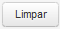
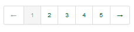

Pesquisar Usuário Externo
Acione no Menu a opção: Usuário Externo, para ser exibido o formulário para Pesquisar Usuário Externo.
Acione a opção  para apresentar o resultado da pesquisa conforme os dados informados.
para apresentar o resultado da pesquisa conforme os dados informados.
Para [limpar] o formulário de pesquisa clique em .
O sistema exibe o resultado da pesquisa de acordo com a imagem abaixo:
Na coluna "Ações" acione a opção desejada:
Para visualizar Usuário Interno, acione a opção .
Para Reativar Usuário Interno, acione a opção , será alterado o Status para Ativo.
Para Inativar Usuário Interno, acione a opção , será alterado o Status para Inativo.
Para Atribuir Perfil ao Usuário Externo, acione a opção preencha o formulário conforme figura abaixo:
Acione o botão  para adicionar atribuição de Perfil conforme figura abaixo:
para adicionar atribuição de Perfil conforme figura abaixo:
Para salvar os dados informados, acione a opção  ;
;
Para desistir do cadastro, acione a opção  o sistema retorna para a tela "Pesquisar Usuário Externo".
o sistema retorna para a tela "Pesquisar Usuário Externo".
Acione o botão para retornar a tela "Pesquisar Usuário Externo".
Clique em  para retornar à tela de pesquisa.
para retornar à tela de pesquisa.
Selecione  para gerar o arquivo (.pdf) com os dados da pesquisa.
para gerar o arquivo (.pdf) com os dados da pesquisa.
Para controle da quantidade dos registros da pesquisa clique em  .
.
Navegue pelas páginas da pesquisa utilizando:  .
Created with the Personal Edition of HelpNDoc: Full featured Documentation generator